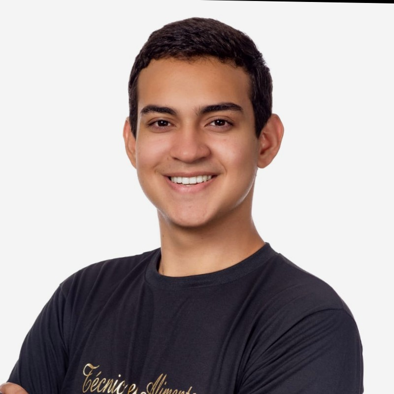
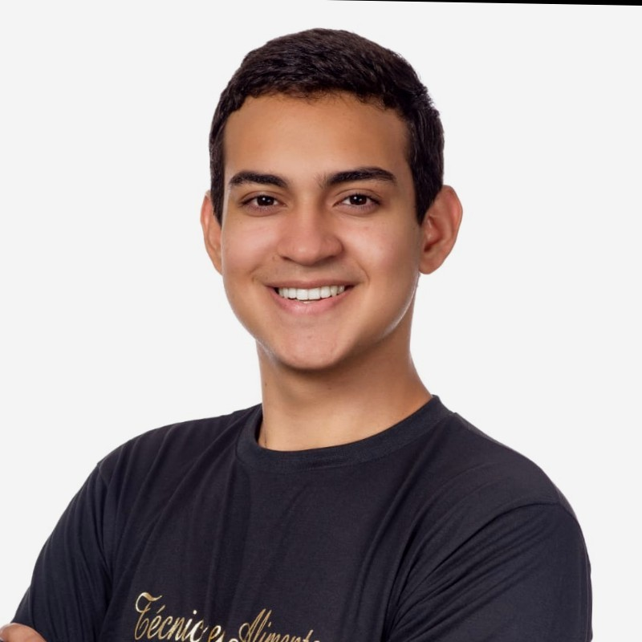

Formação Acadêmica
-
2018
Quando terminei o ensino fundamental resolvi entrar no Instituto Federal do Rio Grande do Norte e fazer o Curso Técnico de Alimentos oferecido pelo campus Currais Novos
-
2022
Após terminar o Curso, estava decidido a entrar em direito, porém, resolvi ceder minha vaga e tentar o Curso de Nível Superior de Sistemas para Internet, também ofertado pelo IFRN campus Currais Novos.
-
2023
Conclusão do curso Web Design Responsivo ofertado pelo FreeCodeCamp, e ter conseguido o certificado de Conclusão
Experiência Profissional
Minha Experiência Profissional se resume a momentos que tive nesse período entre 2022 até o dia de hoje ().
Tive no segundo semestre a oportunidade de pagar uma matéria optativa que seria ofertada apenas para o sexto período - Tópicos Avançados em Sistemas para Internet, trabalhei várias habilidades pois o professor adotou uma dinâmica que simulou o mercado de trabalho, então ficamos responsáveis por apresentar um pitch, montar um grupo e criar do zero uma aplicação com back-end, front-end, devOps, UX e Quality Assurance
No final de 2022, fui chamado para participar do projeto de pesquisa referente a criação de uma plataforma para o evento que ocorre anualmente envolvendo os campus do Estado - Secitex (Semana de Ciência, Técnologia e Extensão do IFRN) - Atualmente eu faço parte dessa equipe com sete integrantes onde trabalho como bolsista e trabalho várias habilidades.
Habilidades
Soft Skills
- Comunicação Efetiva
Como uma pessoa que teve contato com vários ambientes, é natural ter uma boa comunicação, de forma clara, eficiente e quando necessário objetiva, com colegas, chefes e clientes.
- Adaptabilidade
Além do motivo explicado acima, também tive convivência com vários tipos de pessoa, tenho facilidade a se adptar a novos ambientes e lidar com novas situações.
- Liderança e Trabalho em Equipe
Tenho habilidade de liderar ou trabalhar em equipe de forma colaborativa, contribuindo de forma positiva para resuluções de problemas e procurando atingir os objetivos em comum.
- Esforço
O esforço é uma habilidade comum, mas muito apreciada, não me importo de não saber algo, mas sempre tenho o esforço de aprender e atingir minhas metas
- Pensamento Crítico e Resolução de Problemas
Apesar da lógica as vezes me ser um pouco falha, meu pensamento criativo me permite ter a habilidade de identificar problemas e resolvê-los de forma eficiente.
- Criatividade e Curiosidade
Tenho vontade de sempre aprender coisas novas e explorar novas ideias, ir a fundo nos meus conhecimentos ou tentar novas técnologias.
Hard Skills
- Programação
Em escala de 1 a 10 possuo conhecimento nas seguintes linguagens de programação:
JavaScript/TypeScript - 6;
Python - 5;
e C++ - 3 (eem processo de aprendizado). - Desenvolvimento web
Atualmente meu ponto mais forte é o Desenvolvimento Web, tenho bom conhecimento em HTML, CSS e manipulação do DOM, além de já ter trabalhado com frameworkd como React e atualmente com Vue.
- Banco de Dados
Possuo conhecimento moderado de SQL, consigo implementar o CRUD em bancos de dados, além de estar trabalhando com o framework Adonis no Projeto de Pesquisa do IFRN.
Projetos e Realizações
Minhas principais Realizações voltados para a área Técnologia são:
-
Concluir a matéria Tópicos Avançados em Sistemas para Intenet, pois tive que adiantar vários assuntos, aprender e reaprender muitas coisas e dar meu máximo, apesar das dificuldade, em nenhum momento pensei em desistir, sempre tive a humildade de reconhecer minhas fraquezas e pedir ajuda sempre que se mostrava necessário, porém isso não tira meu mérito, como já dizia um professor: "Besta não é aquele que faz perguntas, e sim aqueles que deixam de fazer".
-
Ter minhas habilidades e competências reconhecidas e ser chamado para fazer parte de uma equipe responsável por produzir um produto para o Instituto Federal, pois esse site projetado para a Secitex será usado por outros campus nos anos seguintes.
Objetivos
Meus objetivos giram em atuar em áreas relacionadas a Técnologia ou Sistemas de Internet.
Tendo como ojetivo pessoal me formar no curso de Sistemas para Internet e começar a trabalhar em uma empresa na área de tecnologia, seja dentro ou fora do Brasil. Até lá, pretendo buscar oportunidades como voluntário ou em empregos de meio período, a fim de adquirir experiência e desenvolver minhas habilidades. Estou muito animado com as possibilidades que a área de tecnologia oferece e estou comprometido em trabalhar duro para alcançar meus objetivos.
Interesses Pessoais
Tenho muitos interesses pessoais, mas alguns dos mais importantes para mim são construir minha independência financeira e encontrar um trabalho que me permita crescer pessoal e profissionalmente. Estou disposto a trabalhar em outras cidades, estados ou países, se necessário, para atender aos requisitos do trabalho que busco.
Para me manter motivado, eu me concentro em quatro coisas principais: meu futuro, minha vida pessoal, minha vida profissional e minha família. Acredito que, ao buscar o equilíbrio entre essas quatro áreas, posso alcançar meus objetivos e ter uma vida plena e realizada. Atualmente eu estudo pensando em mim como pessoa, e em mim como profissional, pretendo crescer dentro da área e me tornar uma pessoa altamente capacitada para ser o melhor colaborador, seja participando de uma equipe, liderando ou até estando à frente de alguma empresa, sempre trabalho em busca de ser uma pessoa mais responsável e madura, pois a felicade é minha maior conquita.